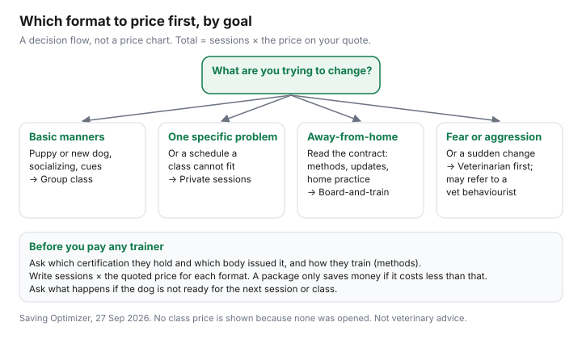

Pets · Canada
Dog Training Costs in Canada: Group Classes vs Private Trainers
Group classes, private sessions, and board-and-train are three ways to buy someone’s time with your dog. None of them had a Canadian price on a page opened on 27 Sep 2026. The only dollar this draft can stand behind is the Certification Council for Professional Dog Trainers’ $105 practice exam, and that fee is for a person sitting a practice test, not for your dog’s Tuesday class. The worksheet multiplies sessions by the price on your quote. There is no affiliate offer. Education only, not veterinary advice.
Key takeaways
- No group, private, or board-and-train rate was opened. The chart’s three bars are the same height on purpose.
- Total cost is sessions times the price per session. A package is cheaper only when its price is lower than that product. No package price was opened, so no saving is printed.
- CPDT-KA, opened 27 Sep 2026: at least 300 hours in the last three years, age 18, a 200-question exam, and the council’s standards and ethics. CPDT-KSA requires a current CPDT-KA. The practice exam is $105.
- A credential is not a veterinary licence. Illness and pain go to a veterinarian. This page does not define a veterinary behaviourist’s training because that page did not open.
- Daycare and walking are a different purchase. If the dog cannot be in a group yet, price training before you price a daycare day. That comparison is the daycare and walker guide.
Group classes vs private sessions vs board-and-train
A group class sells a room, a time, and other dogs. You are there. The thing you are buying is practice around distractions, at whatever price the school wrote down. A private session sells the trainer’s time with your dog, usually at your home or in an empty room. You are still there. Board-and-train sells days or weeks in which the dog lives where the trainer keeps dogs, and you are mostly not there. Those are different products. Averaging them into “training costs this much in Canada” needs prices this draft does not have.
Match the format to the problem you can describe. Loose-leash walking with other dogs in the room is a reason people pick a group. A dog that panics in that room is a reason to ask whether a private session comes first. A board-and-train stay does not, by itself, teach you what to do on the walk home. Ask what the hand-back looks like. The rest of the dog’s budget, food and vet care included, is the cost-of-owning guide. Training is one line in that year, not a substitute for it.
Cost formula: sessions × price and package value
Write three numbers before you discuss value. How many sessions. The price of one session. Whether a package covers a different count. The total is the count times the single price, unless the package price replaces that product. If six group classes are offered at a package price, compare the package with six times the drop-in price. If the school will not tell you the drop-in price, you cannot know whether the package is a discount. No school’s price opened, so this page has no example in real dollars beyond the unit row in the table.
Travel fees, facility rental, and a required book are extras only if the quote lists them. Do not add a fictional travel fee to make private training look worse. Do not ignore one that is printed on your quote. A class that runs six weeks and then invites you to the next level is two purchases. Count the one you will actually attend. The adoption guide is the first-year context if the dog is new. It is not a training price.
Choosing a trainer: certifications and humane methods
The Certification Council for Professional Dog Trainers’ trainer page, opened 27 Sep 2026, describes two credentials. CPDT-KA, Certified Professional Dog Trainer-Knowledge Assessed, is a 200-question multiple-choice exam. To sit it, a candidate must be at least 18, hold a high-school diploma, GED, or equivalent, log a minimum of 300 hours of dog-training experience in the last three years, provide an attestation from a CCPDT certificant, a veterinarian, or another approved professional, and confirm compliance with the council’s Standards of Practice and Code of Ethics. The exam is offered at testing centres and by remote proctoring. CPDT-KSA, the skills credential, requires a current CPDT-KA, an application, a video of assigned exercises, the same ethics confirmation, and an examination fee the page names without printing the amount. The skills exam is four hands-on exercises over a three-week window. A 50-question practice test for the knowledge exam costs $105. Passing the practice test is not required and does not guarantee a pass on the real exam.
The standards document itself did not open, so this page does not summarise which tools it allows or bans. Ask the trainer for the standard they claim, and read it. “Force-free” and “balanced” are marketing words until they point at a written policy. Confirming compliance with a code you have not read is not the same as watching a session. Ask to see a class. A certificate from an organisation this draft did not open is not ranked below or above CCPDT. It is simply not described here. The council’s own page says there are many certifications and quotes a certificant calling CCPDT’s the most professional. That is a testimonial on the council’s site. It is not a survey, and this page does not adopt it as a ranking.
Online and DIY resources
A video is not a credential and not a session count. If you use one, it does not go in the worksheet as a priced class unless you paid for it. No Canadian municipal recreation fee for a puppy class was opened, so a city program is not given a dollar either. Ask your parks department if you want that quote, and treat it as a group-class row when you have it. Books and long online courses are the same rule: price you paid, divided by nothing magical. They do not replace the 300 hours a CPDT-KA candidate has to log. They might be how you practise between classes you did buy.
DIY is reasonable for lessons you can see, such as a sit in a quiet kitchen. It is a weak plan for a dog that is biting, or for a problem that might be pain. That is the next section. The vet bill for an injury, if training waits too long or goes badly, is the vet-bill guide. Do not spend the emergency fund on a second online course while an injury is unassessed.
Behaviour issues: when you need a vet behaviourist
The CCPDT behaviour-consultant credential, CBCC-KA, is described on the council’s site as an advanced certification for trainers who offer behaviour modification. This draft did not open the candidate handbook’s fee. The credential is still not a licence to practise veterinary medicine. A person can hold it and not be a veterinarian. A veterinarian can see the dog and not hold it. The pages opened do not define the Canadian specialty title “veterinary behaviourist,” the extra degree it requires, or a referral threshold. Those sentences are omitted.
What you can do without that missing page is separate the questions. If the dog is limping, losing weight, or suddenly aggressive, ask a veterinarian whether pain or disease is on the list before you buy a board-and-train week. If the veterinarian says the next step is a behaviour referral, ask what the title means in your province and what the consult costs. Write that fee on the worksheet as its own row. It is not a group class. Not veterinary advice.
Worksheet
| Format | Sessions | Price you enter | Total |
|---|---|---|---|
| Group | The number on the schedule | Your quote | Sessions × price |
| Private | The number you will book | Your quote | Sessions × price |
| Board-and-train | Days or weeks on the contract | Your quote | That price, plus extras the contract lists |
| Illustrative unit, not a quote | 1 | $1 | $1. Replace it. |
| Package check | Package price minus (sessions × single price). A negative number is not a saving. No package was opened. | ||

Sources & date stamps
- CCPDT, dog trainer certification, opened 27 Sep 2026. CPDT-KA eligibility including 300 hours in the last three years, 200-question exam, practice test $105. CPDT-KSA requires a current CPDT-KA. Examination fee amount for CPDT-KSA not printed on that page. Standards PDF not opened, so method rules are not summarised.
- No Canadian group, private, board-and-train, or municipal recreation price was opened. No veterinary-behaviourist credential page was opened.
Frequently asked questions
How much do dog training classes cost?
No group-class price, private-session price, or board-and-train price was on a page opened on 27 Sep 2026. This page will not print a Canadian range from a forum. The CCPDT practice exam is $105, and that is an exam product for people seeking a credential, not a class for your dog. Write the quote you were given, multiply by the sessions, and compare that with any package on the same sheet.
Is private training worth it?
Worth it is a comparison you can do only after both prices exist. Private sessions times the private price, against group sessions times the group price, for the behaviour you are actually trying to change. If one of those quotes is missing, the comparison is missing. A private hour is not automatically the better education, and a cheaper group is not automatically enough. Equal bars on the chart mean no price was opened, not that the formats cost the same.
What certifications should a trainer have?
The Certification Council for Professional Dog Trainers page opened 27 Sep 2026 describes CPDT-KA, a 200-question knowledge exam, and CPDT-KSA, a skills exam that requires a current CPDT-KA. CPDT-KA candidates must be at least 18, have a high-school diploma or equivalent, log at least 300 hours of dog-training experience in the last three years, and confirm compliance with the council’s standards and ethics. Other certificates exist. This page did not open them, so it does not rank them.
Is board-and-train a good idea?
Board-and-train means the dog stays with the trainer instead of coming home between sessions. No price, duration, or housing standard was on a page opened for this draft, so this page does not recommend or reject the format. Ask where the dog sleeps, how many dogs are on the property, what happens if the dog is ill, which methods are used, and what you are supposed to practise when the dog comes home. A stay you cannot visit is a harder quote to judge.
When do I need a veterinary behaviourist?
A CPDT-KA or a behaviour-consultant credential is not a veterinary licence. The pages opened do not define a Canadian veterinary-behaviourist specialty, so this page does not invent the referral rule. If the behaviour might be pain or illness, ask a veterinarian before you buy another package of sessions. The trainer cannot diagnose that. Not veterinary advice.